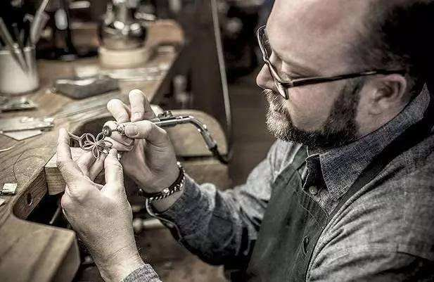
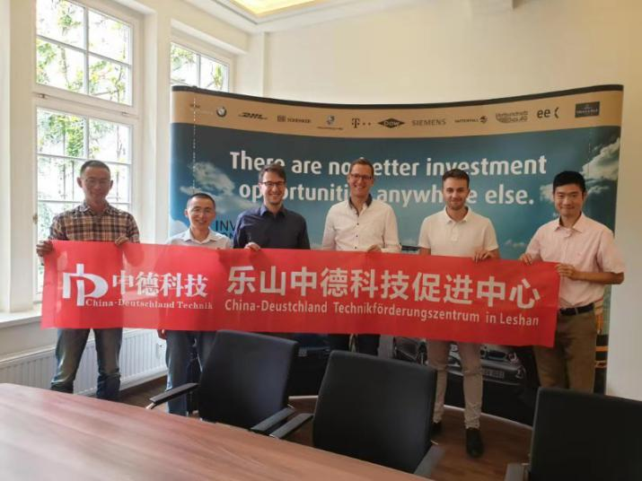

德国模式--民营中小企业的学习典范
自第二次工业革命以来，德国人在机械、电气、化工等领域逐渐崛起成为世界冠军，但就算是以西门子、大众、蒂森克虏伯、宝马等声名显赫的大企业为贸易基础，德国的经济总量在2018年也不过美国的五分之一，中国的四分之一，可是德国出口额高踞世界第二（1.547万亿美元，仅次于中国），哪些企业对此所作的贡献最大？是在各自所在的细分市场默默耕耘并且成为全球行业领袖的中小企业！
他们成功背后的逻辑，就是他们对技术和研发的专注执着。例如德国COMPRION公司，专注于制造手机卡接口测试设备，员工不足50人，国际市场占有率却超过了90%。
当下以中美贸易战为导火索，国内众多中小企业暴露出了长期以来的众多问题：在供应链处于底端、低技术、低附加值、劳动密集型，这些企业现在必须进行转型升级改造，否则很有可能面临淘汰。
11月23日-12月1日，9天8晚，乐山中德科技促进中心联合德国莱比锡地区经济促进中心、德累斯顿工业大学等机构精心安排了“德国中小企业及科研院所考察班”，建立中德合作，提升企业竞争力。
行程亮点
实地参访多家企业及科研院所
通过德国萨克森州地区经济促进中心和德国IHK（德国工商联合会）的海量资源网，我们将带您实地走访从大众4.0未来工厂到专攻某一个零部件并做到极致的“隐形冠军”等企业，并与相关高层负责人互动交流
按企业需求定制化行程
从环保新能源到生物医药科技、从智能制造到电子电力技术，我们会根据企业具体需求尽量安排相关的企业或科研院所进行参访，并配备相关翻译和咨询人员
顶尖服务团队
通过德国萨克森州地区经济促进中心和德国IHK（德国工商联合会）的海量资源网，我们将带您实地走访从大众4.0未来工厂到专攻某一个零部件并做到极致的“隐形冠军”等企业，并与相关高层负责人互动交流
国际化咨询服务
通过德国萨克森州地区经济促进中心和德国IHK（德国工商联合会）的海量资源网，我们将带您实地走访从大众4.0未来工厂到专攻某一个零部件并做到极致的“隐形冠军”等企业，并与相关高层负责人互动交流
多元化旅程
德国属于欧盟申根国家，除了德国的美食美景，在周末时间我们还将带您深度游览捷克和瑞士，感受“天使之城”和“梦幻之城”的人文和自然魅力
德国合作伙伴
莱比锡大学国际中小企业促进中心
莱比锡大学国际中小企业促进中心隶属莱比锡大学经济管理学院，拥有MBA博士以上学历多人，与世界多地政府和企业均建立了良好合作关系，其宗旨为推动德国初创企业以及中小企业到对应国家进行孵化和发展。现实际负责人为kassberg先生和张毅博士（MBA）。
图2：与莱比锡地区经济促进中心合影，左三为Johannes Wege先生
德累斯顿工业大学
德累斯顿工业大学作为德国11所精英大学之一，TU 9联盟成员，今年QS排名世界151位。其中交通学院为发展历史最悠久的学院之一，其毕业生质量在全世界都得到很高认可，现对外负责人为Prof.Stephan教授，Prof.Stephan教授为西门子顾问、世界级电力专家，同时担任德国著名电力及铁道设备公司IVB的CEO，特别希望同中国企业进行合作，拓展中国市场。

图2：与莱比锡地区经济促进中心合影，左三为Johannes Wege先生
D1：国内→布拉格上午：国内乘机（11小时）抵达捷克布拉格，酒店签到集合 下午、晚上：布拉格古城游览，调整时差 |
D2：德累斯顿上午：布拉格乘车（2小时）抵达德国德累斯顿，酒店签到集合 下午：大众4.0未来工厂参访 晚上：前期参访准备及相关咨询 |
D3：德累斯顿上午：IVB公司参访，并与负责人会谈 下午：体验德国顶级白葡萄酒庄园 晚上：交流分享会 |
D4：德累斯顿上午：与德累斯顿中小企业团交流会 下午：定向企业参访（根据随团企业需求） 晚上：交流分享会 |
D5：莱比锡上午：与莱比锡中小企业团交流会 下午：定向企业参访（根据随团企业需求） 晚上：交流分享会 |
D6：莱比锡上午、下午：定向企业参访（根据随团企业需求） 晚上：交流分享会 |
D7：莱比锡→瑞士卢塞恩上午：乘机抵达瑞士卢塞恩，酒店签到集合 下午：体验瑞士绝美湖光山色 晚上：复盘交流会 |
D8：瑞士卢塞恩、苏黎世上午：瑞士表厂参访（根据需要） 下午：苏黎世深度游 晚上：复盘交流会 |
D9：瑞士→国内上午、下午：乘机抵达国内 晚上：结业晚宴 |